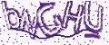

<!DOCTYPE html>
<html lang="en">
<head>
    <meta charset="UTF-8">
    <title>75-定位流</title>
    <style>
        * {
            margin: 0;
            padding: 0;
        }

        div {
            width: 100px;
            height: 100px;
        }
        .box1 {
            background-color: lightcoral;
        }

        .box2 {
            background-color: lightgreen;
            /*相对定位*/
            position: relative;
            top: 20px;
            left: 20px;
            margin-bottom: 20px;
        }
        .box3 {
            background-color: skyblue;
        }

        input {
            width: 200px;
            height: 50px;
        }

        img {
            width: 100px;
            height: 50px;
            position: relative;
            top: 20px;
        }

        .box4 {
            background-color: lightcoral;
        }

        .box5 {
            background-color: lightgreen;
            position: absolute;
            left: 0;
            /*right: 0;*/
            /*top: 0;*/
            bottom: 0;
        }
        .box6 {
            background-color: skyblue;
        }
        span {
            width: 100px;
            height: 100px;
            background-color: yellow;
            position: absolute;
        }
    </style>
</head>
<body>

<!--
    定位流分类：
        1.相对定位
                相对定位就是相对于自身原先在标准流中的位置进行偏移
                相对定位不会脱离标准流，会继续在标准流中占用空间
                相对定位中，同一个方向上的定位属性只能使用一个
                由于相对定位是不脱离标准流的，所以在相对定位中是区分块级元素/行内元素/行内会计元素的
                相对定位的元素会占用标准流中的位置，所以当给相对定位的元素设置 margin/padding 等属性时，会影响到标准流的布局
                用于对元素进行微调
                配合绝对定位使用

        2.绝对定位
                绝对定位是相对于 body 来定位的
                绝对定位的元素是脱离标准流的
                绝对定位的元素是不区分块级元素/行内元素/行内会计元素的
                默认情况下，所有的绝对定位的元素，无论有没有祖先元素，都会以 body 作为参考
                如果一个绝对定位元素有祖先元素，并且祖先元素也是定位流，那么这个绝对定位的元素就会以定位流的那个祖先元素作为参考点
                只要是这个绝对定位元素的祖先元素都可以
                上述指的定位流是指绝对定位/相对定位/固定定位，只有静态定位不行
                如果一个绝对定位元素有祖先元素，并且祖先元素也是定位刘，而且祖先元素中有多个元素都是定位刘，那么这个绝对定位的元素会以
                离他最近的那个定位流的祖先元素为参考点
                上述例子：76-绝对定位-参考点

                ------------------------------------------------------------------------------------------------------

                如果一个绝对定位元素是以 body 作为参考点，那么其实是以网页的首屏的宽度和高度作为参考点，而不是以整个网页的宽度和高度
                作为参考点

                一个绝对定位的元素会忽略祖先元素的 padding 属性
                上述例子：77-绝对定位-注意点


        3.固定定位
        4.静态定位
-->
<!--
<div class="box1"></div>
<div class="box2"></div>
<div class="box3"></div>

<input type="text" name="" id="">


<hr>
<hr>
<hr>-->


<div class="box4"></div>
<div class="box5"></div>
<div class="box6"></div>
<!--<span>我是 span</span>-->

</body>
</html>